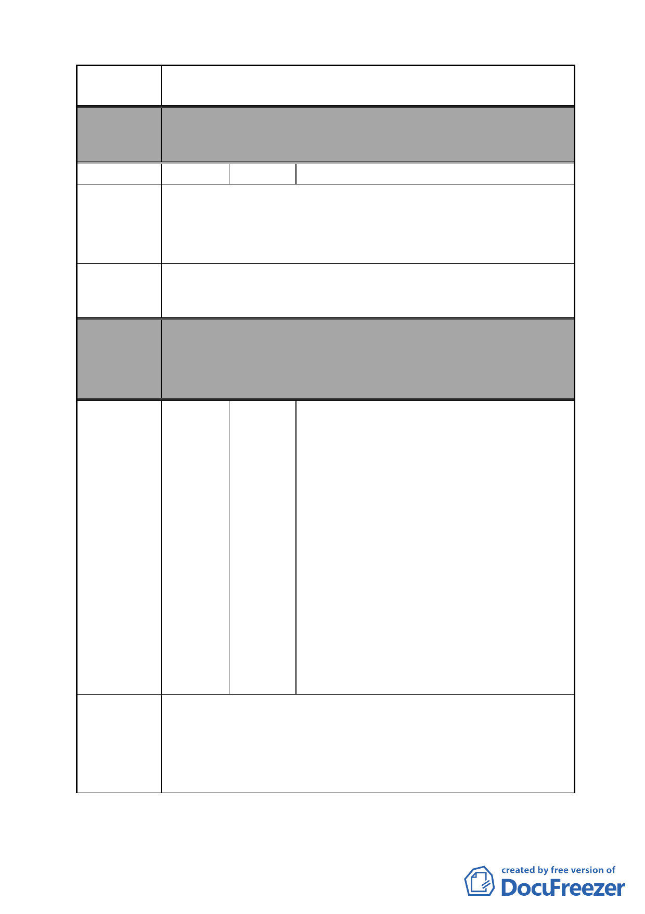

案名
變更臺北市南港區鐵路地下化沿線土地主要計畫案
重劃範圍）
編號
陳情理由
建議辦法
22 陳情人 詹炳煌等 31 人
陳情地點：C 區。
1.世代居住於此，目前物價高漲，無能力撤離，堅決反對搬遷。
2.公園無須規劃這麼大，保留臨南港路旁房子，還給居民合理
生活空間。
維持現狀，保留原地。
委員會
決議
編號
陳情理由
本案除文字誤繕應再作修正外，其餘依市府本次會議所送修
正計畫書內容通過。
（市府本次會議所送修正計畫書，業將陳情地點剔除於市地
重劃範圍）
陳振中、金文彬、盧定昶、明翠英、林佳
寬、黃淑雯、林美娜、溫美智、黃戴福妹、
曾德一、吳季芸、曹富強、鄭惠玲、王家
義、宋阿玉、陳秀梅、劉凌文、劉信浩、
連書青、葛順榮、葛燕容、陳暉、周洪潔、
沈禮台、游晴斐、李嫦娥、游川毅、宋宇
克全、林雅惠、蕭以夫、林秋香、潘振發、
23 陳情人 蔣美娥、李昭文、李宗錡、廖淑華彭秀玲、
林覺隆、陳春光、劉王阿花、宋金蘭、朱
美恩、張鳳美、彭亦湘、史弘揚、陳正弘、
江天健、王先登、劉貞吟、張賜春、陳雪
華、鄒發憲機、蔡恩賜、黃敏榮、彭禎祥、
史月珠、戴沛瑤、傅惠郁、黃斐盈、李德
祥蘇靖儀、戴妘珊、江丕忠等 13 人連署、
基督教傳道會復生教會（附 38 人連署）、
1.若要促使南港轉型為現代化都市，可否考慮先將國有 202 兵
工廠遷離南港，釋放出土地後，再考慮徵收私有土地。
2.請考慮增加更多的機會，讓居民及商家湧入南港，使南港繁
榮起來，在 C 區興建大型公園無法達到此目標。
3.在學校對面興建大型公園，易聚集遊民，造成安全上的隱憂。
- 34 -